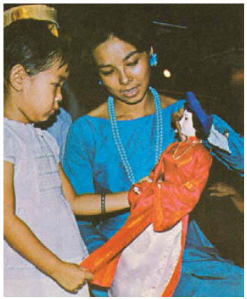

Khung cửa sổ nơi Cáo đã đứng tối đen khi họ đến được chỗ ngôi nhà. Jacob tự buộc mình không được nghĩ xem điều đó có nghĩa là gì. Donnersmarck nhảy lên những bậc thềm, như thể nếu khẩn trương lên thì ông có thể giành lại em gái mình. Cánh cửa nặng nề bật mở ngay khi ông dùng vai đẩy nó ra. Jacob không cần giải thích ông phải cẩn thận với một ngôi nhà không khóa cửa như thế này. Cả hai cùng rút kiếm ra. Súng ống vô dụng trước yêu râu xanh cũng như trước gã thợ may trong Rừng Đen.
Tiền sảnh mà họ bước vào nồng nặc mùi hoa Quên chính-mình-đi hơn cả trên những con đường bất tận trong mê cung.Jacob ngắt bỏ những bông hoa khỏi chiếc bình cạnh cửa, còn Donnersmarck mở cánh cửa sổ cao ra cho khí trời đêm tràn vào nhà.
Từ tiền sảnh có nhiều hành lang tỏa đi nhiều hướng khác nhau, và một cầu thang rộng rãi dẫn lên tầng một. Làm sao bây giờ. Họ có nên chia ra hai hướng khác nhau không?
Họ không phải quyết định nữa. Một người hầu bước ra từ một trong những hành lang. Từ bàn tay lông lá có thể đánh giá rằng hắn không phải lúc nào cũng là người trần bình thường.
Jacob rút súng ra. Có lẽ ít nhất thì súng cũng có tác dụng với hắn, cả khi nó vô dụng trước ông chủ của hắn.
“Cô ấy ở đâu?”
Không có câu trả lời. Đôi mắt đang nhìn anh chăm chú đen tuyền một màu như mắt thủ.
Donnersmarck túm lấy cổ áo hồ cứng của tay người hầu và gí mũi dao nhọn dưới cằm hẳn. “Nếu cô ấy chết, ngươi cũng tiêu luôn, nghe rõ chưa hả? Cô ấy ở đâu?”
Mọi thứ diễn ra quá nhanh.
Cặp sừng hươu mọc ra từ thái dương của gã người hầu xé toạc da Donnersmarck trước khi ông có thể tự vệ bằng dao. Jacob nổ súng, nhưng viên đạn không ăn thua, và tên người hươu đánh bật lưỡi dao của anh không chút khó khăn như đánh bật gậy của một đứa trẻ. Những con hươu con sẽ mang hình dạng người nếu người ta trộn tóc người vào rơm cho chúng ăn - Jacob đã từng đọc được như thế. Nó có nghĩa là đối với chủ nhân chúng sẽ trung thành mù quáng.
Người hươu lau máu của Donnersmarck dính trên trán và chỉ tay ra lệnh về phía hành lang nơi hắn vừa đi ra, nhưng Jacob lờ hắn đi. Anh quỳ xuống bên cạnh Donnersmarck và lục tìm trong chiếc túi đeo nơi thắt lưng ông. Vâng, ông vẫn mang cây kim phù thủy theo bên mình. Jacob châm kim vào bàn tay đang chảy máu của Donnersmarck. Cây kim không thể chữa khỏi một vết thương nặng thế này, nhưng ít nhất nó có thể làm khép miệng vết thương. Người hươu bồn chồn khụt khịt mũi. Chỉ có cái đầu của hắn là biến hình. Máu chảy từ cặp sừng xuống chiếc áo đuôi tôm.
“Đi đi, Jacob!” Giọng Donnersmarck nghe ra như có tiếng lạch cạch khàn đặc trong cổ họng, nhưng có lẽ cây kim sẽ giữ cho ông sống sót đủ lâu. Đủ lâu đến chừng nào, Jacob? Anh đứng dậy.
Gã người hầu chỉ tay về phía hành lang mà hắn đã từ đó đi ra. “Jacob, mẹ kiếp!”, anh tưởng đang nghe thấy giọng lão Chanute chửi rủa. “Ta đã dạy chú mày những gì về yêu râu xanh? Làm sao mà các người có thể thực sự nghĩ rằng chỉ việc ngang vào nhà và đánh cắp con mồi của hắn chứ?”
Những cánh cửa. Mỗi lần đi ngang qua một cánh cửa, Jacob đều nghĩ sẽ bắt gặp Cáo nằm chết phía sau cánh cửa ấy. Nhưng mỗi khi anh dừng bước, tay người hầu lốt hươu lại phát ra tiếng khụt khịt đầy đe dọa.
Cánh cửa mà hắn dẫn anh tới đang để mở.
Jacob đã trông thấy những bức tường đỏ từ cách xa nhiều bước chân.
Và những xác chết lủng lẳng trên xích vàng.
Ở chính giữa là Cáo.